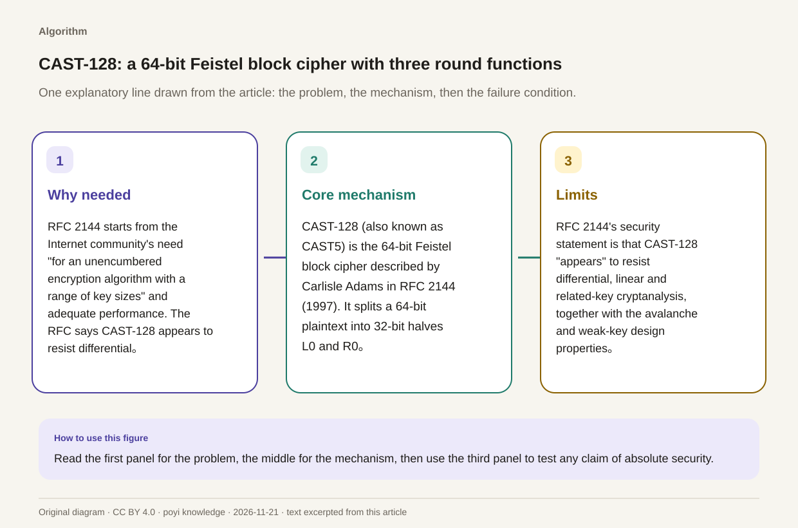
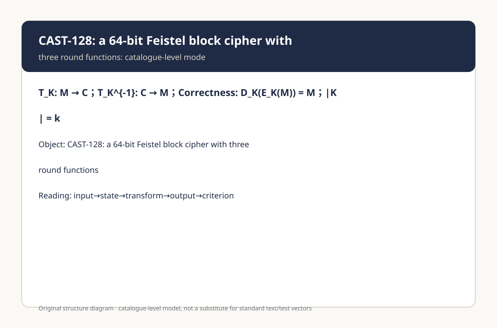

Principles
Algorithm: CAST-128 (CAST-128 分组密码). CAST-128 (also known as CAST5) is the 64-bit Feistel block cipher described by Carlisle Adams in RFC 2144 (1997). It splits a 64-bit plaintext into 32-bit halves L0 and R0, uses a 40- to 128-bit key in 8-bit steps, and runs either 12 or 16 rounds: 12 rounds for keys "up to and including 80 bits", and 16 rounds for longer keys. RFC 2144 places CAST-128 in the class of Feistel ciphers and says its overall operation is similar to DES; the RFC's introduction also calls it a DES-like SPN, but the Section 2 Li/Ri round structure is Feistel, and this article follows the Section 2 structure in calling it a Feistel cipher. ```text Li = R(i-1) Ri = L(i-1) XOR f(R(i-1), Kmi, Kri)
After the last round (16 or 12) the final halves are swapped, and the ciphertext is `R(rounds) || L(rounds)`: `R16 || L16` for 16 rounds and `R12 || L12` for 12 rounds. Decryption uses the same structure with the round subkeys in reverse order. CAST-128 derives 32 32-bit subkeys K1..K32 from 128 bits of key material and pairs them into 16 round keys: round i uses the masking subkey `Kmi = Ki` and the rotation subkey `Kri = K(16+i)`; only the low 5 bits of Kri are used. The round function has three types:
```text
Type 1: I = ((Kmi + D) <<< Kri); f = ((S1[Ia] ^ S2[Ib]) - S3[Ic]) + S4[Id]
Type 2: I = ((Kmi ^ D) <<< Kri); f = ((S1[Ia] - S2[Ib]) + S3[Ic]) ^ S4[Id]
Type 3: I = ((Kmi - D) <<< Kri); f = ((S1[Ia] + S2[Ib]) ^ S3[Ic]) - S4[Id]
Here Ia..Id are the most significant through least significant bytes of I, + and - are addition and subtraction modulo 2^32, and <<< is a circular left shift. Rounds 1, 4, 7, 10, 13 and 16 use Type 1; rounds 2, 5, 8, 11 and 14 use Type 2; rounds 3, 6, 9, 12 and 15 use Type 3. CAST-128 uses eight S-boxes: S1, S2, S3 and S4 in the round function, and S5, S6, S7 and S8 in the key schedule; each S-box has 256 32-bit words. The eight boxes need 8 KB of storage, but after key expansion encryption and decryption need only the 4 KB used by the round function. The key schedule writes the 16-byte key as x0..xF, computes intermediate bytes z0..zF, and then derives K1..K32. The first group of formulas in RFC Section 2.4 is:
z0z1z2z3 = x0x1x2x3 ^ S5[xD] ^ S6[xF] ^ S7[xC] ^ S8[xE] ^ S7[x8]
K1 = S5[z8] ^ S6[z9] ^ S7[z7] ^ S8[z6] ^ S5[z2]
K2 = S5[zA] ^ S6[zB] ^ S7[z5] ^ S8[z4] ^ S6[z6]
K3 = S5[zC] ^ S6[zD] ^ S7[z3] ^ S8[z2] ^ S7[z9]
K4 = S5[zE] ^ S6[zF] ^ S7[z1] ^ S8[z0] ^ S8[zC]
The remaining z, x and K5..K32 formulas are in RFC 2144 Section 2.4. This article's teaching implementation computes them directly and checks the result against the RFC Appendix B vectors. Keys can be 40 to 128 bits in 8-bit steps. For keys shorter than 128 bits, the key-schedule input is zero-padded on the right to 16 bytes; the round count is nevertheless determined by the declared key length, not by the padded byte count. A 10-byte (80-bit) key is padded internally to 16 bytes but still runs only 12 rounds; a caller that directly supplies a 16-byte key ending in zeros has supplied a 128-bit key that runs 16 rounds. RFC 2144 also makes CAST-128 and CAST5 synonyms, so a key size may be appended as in CAST5-40 or CAST5-128.

Why it matters
RFC 2144 starts from the Internet community's need "for an unencumbered encryption algorithm with a range of key sizes" and adequate performance. The RFC says CAST-128 appears to resist differential, linear and related-key cryptanalysis, and lists avalanche, the Strict Avalanche Criterion (SAC), the Bit Independence Criterion (BIC), no complementation property, and the "absence of weak and semi-weak keys". RFC Section 2.7 also says the circular rotations "provide intrinsic immunity to linear and differential attacks", while the mixture of XOR, addition and subtraction and the three round-function types make analysis harder; it gives a minimum S-box "nonlinearity of 74 and a maximum" difference-distribution-table entry of 2.
HAC's notes add the design-method perspective: CAST is a design procedure for a family of DES-like ciphers with fixed m×n S-boxes based on bent functions, variable key sizes and variable round counts; Adams and Tavares studied how to construct large S-boxes resistant to differential cryptanalysis and gave a partial example of a CAST cipher with a 64-bit block and eight 32-bit S-boxes. CAST-128 is the concrete instance of that design family specified in RFC 2144, not the design procedure as a whole.
RFC Section 2.7 also claims that CAST-128 reaches 3.3 MB/s on a 150 MHz Pentium and that its strength is in line with its 128-bit key. This article treats those figures as the RFC's implementation claims, not as an independent benchmark or a security proof.
Applications
RFC 2984 is a Standards Track document that specifies CAST-128 for CMS/S/MIME: it defines the content-encryption OID cast5CBC and the key-wrap OID cast5CMSkeywrap, recommends CBC for content encryption, and allows key lengths from 40 to 128 bits; the cast5CBC parameter's IV may default to all zeros, and its length follows the 64-bit block size, namely 8 bytes. Key wrapping is referenced to the CMS procedure in RFC 2630, and only 128-bit CAST-128 keys may be used as key-encryption keys (cast5CMSkeywrapParameter set to 128). This shows CAST-128 being standardized for messaging infrastructure rather than remaining a paper design.
RFC 4880 (OpenPGP, 2007) is a historical document that RFC 9580 obsoleted in 2024; it listed CAST5 as symmetric algorithm number 3, noted its 128-bit key and cited RFC 2144, and said implementations SHOULD implement AES-128 and CAST5. RFC 9580 now states that implementations MUST NOT encrypt data with IDEA, TripleDES or CAST5; implementations MAY decrypt CAST5 to read "older messages or new messages from implementations predating support for" RFC 2440, and SHOULD generate a deprecation warning. CAST-128's current OpenPGP role is therefore legacy decryption, not new encryption; this also shows that it has a historical deployment record in privacy tools.
RFC 2144 Appendix B.1 gives three single-block vectors:
128-bit key = 01 23 45 67 12 34 56 78 23 45 67 89 34 56 78 9A
plaintext = 01 23 45 67 89 AB CD EF
ciphertext = 23 8B 4F E5 84 7E 44 B2
80-bit key = 01 23 45 67 12 34 56 78 23 45 (padded internally to 16 bytes)
plaintext = 01 23 45 67 89 AB CD EF
ciphertext = EB 6A 71 1A 2C 02 27 1B
40-bit key = 01 23 45 67 12 (padded internally to 16 bytes)
plaintext = 01 23 45 67 89 AB CD EF
ciphertext = 7A C8 16 D1 6E 9B 30 2E
The 128-bit key uses 16 rounds; the 80-bit and 40-bit keys use 12. This article encrypts all three vectors and decrypts each ciphertext back to its plaintext.
Appendix B.2 also defines a maintenance test: starting from a=b=0123456712345678234567893456789a, repeat 1,000,000 times, each time encrypting the two halves of a under b and then the two halves of b under the updated a; the final values should be:
a = EE A9 D0 A2 49 FD 3B A6 B3 43 6F B8 9D 6D CA 92
b = B2 C9 5E B0 0C 31 AD 71 80 AC 05 B8 E8 3D 69 6E
This article's verification script runs all 1,000,000 iterations, not a sample. The test covers the key schedule, the three round functions, the final swap and a large number of different subkeys.

Limits & attacks
RFC 2144's security statement is that CAST-128 "appears" to resist differential, linear and related-key cryptanalysis, together with the avalanche and weak-key design properties; those are design and RFC assessments, not a proof against every attack. RFC 4880 (a historical document) warns in its Security Considerations that CAST5 is presently considered strong but has been analyzed less than TripleDES. Taken together, this article treats CAST-128 as a cipher with a long public record, but not as absolutely secure or as free of practical full-round attacks under every model.
RFC 2984 Section 4 also warns that short keys such as 40, 56 or 64 bits may be unacceptably weak for some environments, and always recommends 128-bit keys (where laws permit). This article therefore treats the RFC 2144 40-bit test vector as an algorithm check, not as a recommended deployment configuration.
HAC's notes mention that Rijmen and Preneel gave a cryptanalytic technique applicable to Feistel ciphers with non-surjective round functions, with LOKI'91 and an example CAST cipher as examples, and noted "cases where 6 to 8 rounds" are insufficient. That note concerns an example in the CAST design family, not a complete attack on 16-round CAST-128; this article treats it as a historical warning about the design family, not as a claim that CAST-128 has been broken.
CAST-128 has only a 64-bit block. HAC Note 7.8 explains that with a small block length n a matching pair becomes likely after about 2^(n/2) blocks; for n=64 the birthday scale is about 2^32 blocks. This article therefore treats the safe data volume under one key as limited, but this is a generic birthday analysis, not a theorem specific to CAST-128.
At the implementation level, the CAST-128 round function indexes four S-boxes by bytes, and the key schedule indexes four more; ordinary software implementations are not constant-time; cache or timing may leak key-dependent access patterns, while fault injection may cause incorrect outputs or key recovery. CAST-128 defines only a block cipher, not integrity, IV management or padding; those must come from the mode and protocol. This article's teaching implementation is not constant-time, does not generate keys, and does not implement a mode, protocol, key management or side-channel defenses.
History
HAC's notes describe CAST as a design procedure for a family of DES-like ciphers with fixed m×n S-boxes, variable key lengths and variable round counts, with S-box design linked to bent functions and differential analysis; the Adams and Tavares paper cited by HAC studies large S-boxes resistant to differential cryptanalysis and gives a partial example of a CAST cipher. CAST-128 is the concrete algorithm of that family specified in RFC 2144 in 1997.
RFC 2144 was published by Carlisle Adams (Entrust Technologies) in May 1997 with Informational category; it describes an existing algorithm rather than proposing a new standard. The RFC treats CAST-128 and CAST5 as synonyms and gives the 40- to 128-bit variable key, the 12/16 rounds, the eight S-boxes and the test vectors. Section 3 states that CAST-128 "is available worldwide on a royalty-free basis for commercial and non-commercial uses".
In October 2000, RFC 2984 specified CAST-128 for CMS/S/MIME as a Standards Track document, including OIDs, CBC use and key wrapping; in 2007 RFC 4880 listed CAST5 in OpenPGP's symmetric-algorithm table, and in 2024 RFC 9580 obsoleted RFC 4880 and prohibited new CAST5 encryption. The CAST-128 entity in this article is this one 64-bit Feistel block cipher; CAST5 is its synonym, CMS and OpenPGP are protocols that use it, and the CAST design procedure is the family it belongs to. DES is the structural analogy used by RFC 2144 ("DES-like"), not a component of CAST-128, so this article does not treat DES as a mandatory prerequisite.
Worked example & verification
Worked example
Take one published or standard test vector, record the input, the ordered steps and the byte-exact output, then compare with an independent implementation. Where no citable numeric vector is available, the entry records only structural steps and does not invent an output.
References
- Wikipedia search entry for CAST-128 分组密码. https://zh.wikipedia.org/w/index.php?search=CAST-128%20%E5%88%86%E7%BB%84%E5%AF%86%E7%A0%81
- Handbook of Applied Cryptography (Menezes, van Oorschot, Vanstone). https://www.cacr.math.uwaterloo.ca/hac/